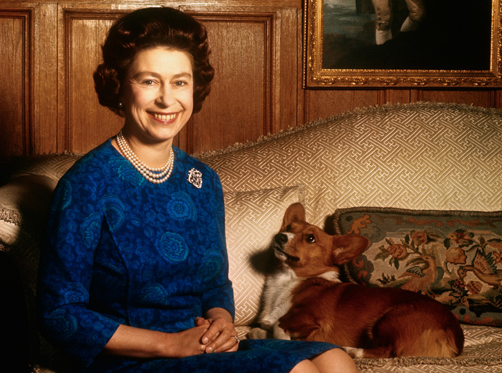
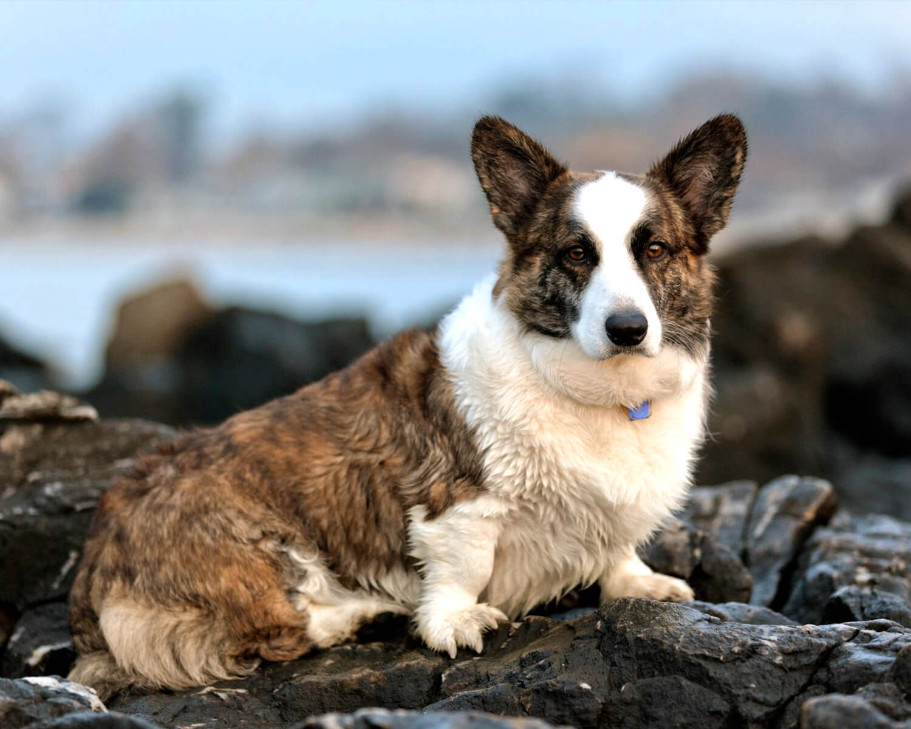

Вельш-корги – это название двух пород собак, а именно вельш-корги-пемброк и вельш-корги-кардиган. Предположительно, они имеют сходное происхождение, но в 1934 году в Великобритании эти породы были четко разделены, и Британским кинологическим обществом созданы первые стандарты корги.
Родина породы – Уэлльс. Скелеты собак, похожих на корги, находили при раскопках на территории современного Уэльса. Ученые считают, что возраст этой породы – несколько столетий.

Интересно происхождение самого слова «корги». По разным версиям с древне-валлийского языка оно переводится как «карликовая собака» или «сторожевая собака».
Корги – миниатюрная овчарка, пастушья собака, которая помогала валлийским крестьянам пасти овец, коз, пони и даже домашнюю птицу. Благодаря невысокому росту, корги удавалось ловко уворачиваться от рогов и копыт. Поскольку корги не склонны много лаять, эти собаки сопровождали и охраняли домашнюю птицу, не пугая ее.
Вельш-корги пемброк – удивительная собака, любимая порода Ее Величества королевы Великобритании Елизаветы ІІ, маленькая овчарка с большим и бесстрашным сердцем.Вельш-корги пемброк ведет свою историю из уэльского графства Пемброкшир.Все владельцы собак породы вельш-корги пемброк практически в один голос говорят о замечательном характере этих маленьких овчарок. Среди главных черт можно выделить активность животного, его высокий интеллект и удивительное дружелюбие к представителям рода человеческого. Если корги еще могут позволить себе проявления некоторой настороженности и агрессивности по отношению к другим собакам, то зарычать или залаять на человека – практически никогда.
Вельш-корги кардиган – небольшая пастушья овчарка с вытянутым корпусом и короткими, крепкими ножками, имеющая сильное внешнее сходство с вельш-корги пемброком. Порода выведена в Англии, обладает невозмутимым и доброжелательным характером. Вельш-корги кардиганы – подвижные, длиннотелые «джентльмены» с мягкой линией верха и миниатюрными, крепкими лапками. Внешне эти приземистые симпатяги заметно крупнее и костистее вельш-корги пемброков. Вельш-корги кардиганы – это собаки-работяги, выводившиеся не для выставок, а для серых трудовых будней. Неудивительно, что пемброки, которые появились на свет несколько позже и являлись «продуктом» скрещивания шпица с вельш-корги, уступают им в рабочих характеристиках и выносливости, но при этом выигрывают в плане внешнего обаяния.
